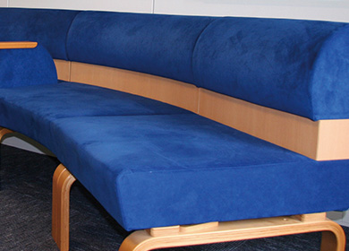
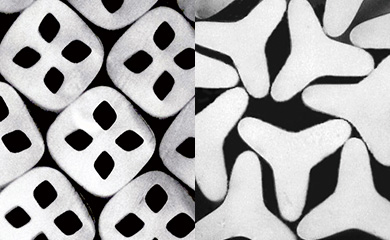

繊維研究所
当社設立の翌年にレーヨンを対象とする研究課が設置され、その後1969年に各地に分散していた繊維分野の研究所・室を統合して、繊維研究所が発足しました。その後、ポリマー設計、製糸技術、テキスタイル加工技術など、繊維に関する幅広い研究を行い、新世代の繊維、テキスタイルを世に送り出しています。
繊維研究所は、アパレル用新製品、タイヤコード用高性能繊維、スエード調人工皮革 ウルトラスエード® 、ワイピングクロス トレシー® などを世に送り出し、炭素繊維や人工腎臓用中空糸など、新事業の基礎となる要素技術も生み出してきました。現在は、アパレル用新製品に向けたポリマー、紡糸の要素技術の深化に加え、環境調和型の新規繊維の創出や、極限追求を切り口にした繊維の高機能化の研究を進めています。

ウルトラスエード®
ウルトラスエード®は、海島複合紡糸により製造される超極細糸を用いたスエード調人工皮革です。その優れた品質・機能性から、ファッション業界をはじめ、インテリアや精密機器の部材などさまざまな分野で採用されています。
Kinari™
さまざまなシルック®シリーズを生み出してきた当社の技術蓄積と、ナノスケールで断面をデザインできる革新的なNANODESIGN®新技術を融合し、天然シルクの特徴である、マイルドな光沢と良好な風合いをポリエステル繊維で実現しました。
※第50回繊研合繊賞マテリアル部門受賞
※2019年度繊維学会技術賞受賞
アパレル用新製品
要素技術の深化のため、ポリエステルの改質による機能性向上等のポリマー研究を行っています。当研究所で開発されたカチオン可染ポリエステルもユニクロ社のヒートテック®に採用されているなど、当社独自の製糸技術、高次加工技術との融合によって幅広く展開されています。
＊ ヒートテック®はファーストリテイリングの登録商標です
環境調和型繊維素材
ポリ乳酸繊維 エコディア®PLA、バイオマス由来のジオールを用いたポリエステル3GT 繊維（ Primeflex® ）、溶融紡糸法で製造可能な世界初のセルロース系繊維 フォレッセ® などがあります。当研究所では、今後もますます重要性が高まる環境にやさしい繊維材料の創出に取り組んでいきます。
フォレッセ®
フォレッセ®は、世界初の熱可塑性セルロース繊維で、従来のセルロース繊維と異なり、紡糸工程での有害薬液を使用しません。また、従来不可能であった異形断面糸や極細糸の製造が可能な繊維です。
※ 2007年度 繊研合繊賞グランプリ、テクニカル部門受賞

高機能繊維創出への取り組み
PPS（ポリフェニレンサルファイド）などの耐熱性ポリマーや液晶ポリマーなどを用いたスーパー繊維など、従来にない新規繊維の研究にも注力しています。IT分野への展開が可能となる、世界最高レベルの導電性能を有するポリエステル導電繊維の創出にも成功しました。今後も重要な課題である革新的な高機能繊維素材の創出に取り組んでいきます。
繊維技術の極限追求
繊維技術の極限追求を切り口にして、繊維の分子配向や結晶構造などの制御による機能高度化、細さの極限を追求したナノファイバーの研究などを行っています。この繊維技術の極限を追求する中で、革新的な紡糸技術NANODESIGN®の開発に成功しました。この技術では繊維断面を超精密に制御可能で、世界で初めてとなる異形断面のナノファイバーや新感覚シルキー素材Kinari™の創出に成功しました。
NANODESIGN®による世界初の異形断面ナノファイバー
※2018年度 独創性を拓く先端技術大賞経済産業大臣賞受賞
研究・開発の歩み（抜粋）
| 1927 | レーヨンを対象とする研究課を設立 |
|---|---|
| 1941 | 独自技術により、ナイロン6の合成と溶融紡糸に成功 |
| 1964 | 絹調ポリエステル繊維 シルック®の生産開始 |
| 1969 | 繊維研究所設立 |
| 1970 | ウルトラスエード®の生産開始 |
| 1987 | 高性能ワイピングクロス トレシー®の本格生産開始 |
| 2002 | 3GTポリマーを用いた複合糸の生産開始 |
| 2005 | 世界初の溶融紡糸セルロース系繊維 フォレッセ®を創出 |
| 2014 | 革新複合紡糸技術NANODESIGN®を開発 |
| 2019 | 新感覚シルキー素材Kinari™を開発 |